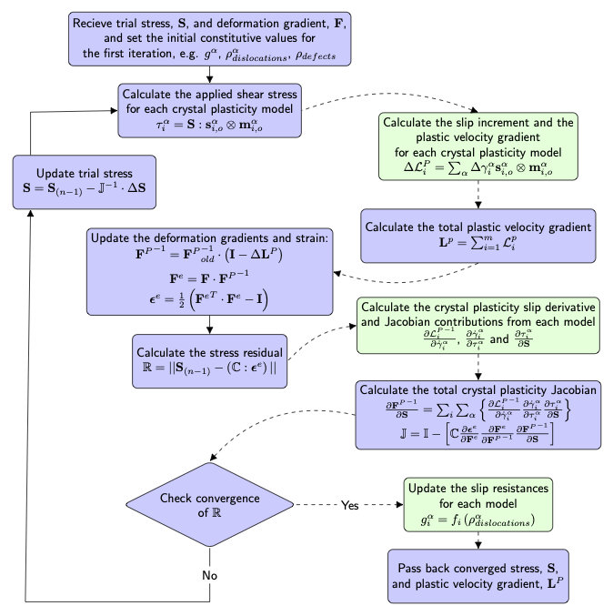

- crystal_plasticity_modelsThe material objects to use to calculate crystal plasticity stress and strains.
C++ Type:std::vector<MaterialName>
Controllable:No
Description:The material objects to use to calculate crystal plasticity stress and strains.
Compute Multiple Crystal Plasticity Stress
Crystal Plasticity base class: handles the Newton iteration over the stress residual and calculates the Jacobian based on constitutive laws from multiple material classes that are inherited from CrystalPlasticityStressUpdateBase
Description
Among the many fields which study the mechanics of crystalline solids, crystal plasticity has been established as a capable tool to explore the relationship between crystalline microstructure evolution and engineering scale stress response (Asaro, 1983; Roters et al., 2010). The formulation of crystal plasticity within a continuum mechanics framework enables the utilization of these models for longer time scales and larger length scales than atomistic and dislocations dynamics models which explicitly track each individual dislocation and defect.
The ComputeMultipleCrystalPlasticityStress class is designed to facilitate the implementation of different crystal plasticity constitutive laws with a certain degree of modularity among models (e.g., flexibility to include one or several slip modes). Comparing to the existing FiniteStrainUObasedCP class, ComputeMultipleCrystalPlasticityStress relies on the Materials system instead of the UserObject system, to store and update state variables. This means for a specific constitutive model, the computation of variables, e.g., slip rate, slip resistance, state variables, and the associated rate components will all be self-contained in one material class. As a result, this base class greatly reduces the number of additional classes that is necessary for a new crystal plasticity constitutive model. Meanwhile, the input block that defines a specific crystal plasticity model is also significantly simplified.
The class ComputeMultipleCrystalPlasticityStress is designed to be used in conjunction with one or several crystal plasticity models that are derived from the CrystalPlasticityStressUpdateBase class.
commentnote:Requires Specific Constitutive Crystal Plasticity Base Class
Any constitutive crystal plasticity model developed for use with the ComputeMultipleCrystalPlasticityStress class must inherit from the CrystalPlasticityStressUpdateBase class.
Crystal Plasticity Governing Equations
Within the ComputeMultipleCrystalPlasticityStress base class, the crystal slip and resulting strain increment are implemented in an updated Lagrangian incremental form. As such, all constitutive evolution equations should also be written in the Lagrangian form (and related to the reference frame).
The corresponding second Piola-Kirchhoff stress measure is used to determine local convergence, at each quadrature point, with in the crystal plasticity constitutive model base class. Once convergence is achieved within the user-specified tolerances, the equivalent Cauchy stress value is calculated. The Cauchy stress measure is then used in the traditional FEM residual calculation within the MOOSE framework (see Figure 2).
A brief overview of the relevant continuum mechanics concepts for the crystal plasticity constitutive model base class is given below.
Constitutive Equations
For finite strain inelastic mechanics of crystal plasticity the deformation gradient is assumed to be multiplicatively decomposed in its elastic and plastic parts as (see e.g., Asaro (1983)): such that and are the elastic and plastic deformation gradients, respectively. The elastic and plastic deformation gradients define two deformed configurations: one intermediate configuration described by , and a final deformed configuration . Here, the change in the crystal shape due to dislocation motion is accounted for in the plastic deformation gradient tensor, , the elastic deformation gradient tensor, , accounts for recoverable elastic stretch and rotations of the crystal lattice,
For a thermo-mechanical problem, a third configuration is introduced accounting for thermal deformations (see e.g., Li et al. (2019), Ozturk et al. (2016), and Meissonnier et al. (2001)). The resulting decomposition reads (1) where is the thermal deformation gradient, such that . The thermal deformation gradient accounts for the deformation of the crystal lattice due to thermal expansion. The constitutive equation and calculation details associated with the thermal deformation gradient are included in ComputeCrystalPlasticityThermalEigenstrain.
The total plastic velocity gradient can be expressed in terms of the plasticity deformation gradient as (2) This formulation is used to compute the updated plastic deformation gradient via backward time integration, i.e., (3) where is the second order identity tensor, the subscript denotes the current step, denotes the previous step, and is the time step size. The plastic deformation gradient is used to calculate the elastic deformation gradient via Eq. (1), which is then used in the computation of the elastic Lagrangian strain. The elastic Lagrangian strain is defined as (4) Let be the second Piola-Kirchhoff tensor, the stress that is work conjugate to . An elastic constitutive relation is given by (5) where is the fourth-order temperature dependent elasticity tensor. The stress is the pull back of the Cauchy stress () from the current configuration which is, (6)
To account for multiple deformation mechanisms, the total plastic velocity gradient () is computed as the sum of plastic velocity gradients coming from each crystal plasticity constitutive equations, (7) where is the plastic velocity gradient corresponding to th th crystal plasticity deformation mechanism, is the total number of deformation modes. Here, is defined as the sum of the slip increments on all of the slip systems (Asaro, 1983), (8) where is the slip rate for the the model on the slip system . Note that the associated slip direction and slip plane normal unit vectors, and , are defined in the reference configuration. The evolution of the plastic slip must be specified for every slip plane and every slip mechanism, which can be expressed as (9) which can take different forms among constitutive models used in crystal plasticity. Here, the denotes the slip resistance and denotes the resolved shear stress that is associated with slip system and model , respectively.
The resolved shear stress is defined as (10) Here, we report the shear stress in a form that considers the thermal effect. For readers who are particularly interested in the thermal eigenstrain calculations, please refer to the ComputeCrystalPlasticityThermalEigenstrain documentation page.
To facilitate the understanding of the above constitutive equations, some fundamental continuum mechanics concepts are included in the following subsections.
Deformation Gradient and Strain Measure in the Reference Configuration
The deformation gradient can be used to find the deformation in the reference configuration as (11) where an upper case subscript denotes the reference configuration, a lower case subscript denotes the current configuration, and denotes the displacement.
The deformation gradient can be multiplicatively decomposed via the Cauchy theorem for nonsingular tensors into two rank-2 tensors, one representing the stretch and the other rotation motion (Malvern, 1969), (12) where is the orthogonal rotation tensor and and are the symmetric right and left stretch tensors, respectively. Cauchy (1827) and Green (1841) introduced the following deformation tensors (13) (14) where and are the left and right Cauchy-Green deformation tensors. These deformation tensors enable the introduction of the Green-Saint Venant and the Almansi-Hemel strain tensors. The Lagrangian Green-Saint Venant strain tensor can be expressed as a function of the right Cauchy-Green deformation tensor (Slaughter, 2012) (15) where is the second order identity tensor. The Lagrangian strain tensor enables the calculation of the strain with respect to the reference configuration as a function of the deformation gradient. In this ComputeMultipleCrystalPlasticityStress class, the elastic part of the Lagrangian strain tensor () is utilized in the calculation of stress (see Eq. (4) and Eq. (5)).
Second Piola-Kirchhoff Stress
In writing a constitutive equation the appropriate, corresponding strain and stress measures must be used: the work conjugate pairs. The work conjugate to the Lagrangian strain tensor is the second Piola-Kirchhoff stress measure.
Both the first and second Piola-Kirchhoff stress measures are defined on the reference configuration, although only the second Piola-Kirchhoff stress tensor is symmetric. The second Piola-Kirchhoff stress tensor can be defined from the Cauchy stress tensor as (16) The inverse deformation gradient is used to relate the current configuration frame back to the reference frame (i.e., pull back). Note in the ComputeMultipleCrystalPlasticityStress class, the pull back of Cauchy stress is via the elastic part of the deformation gradient () only (see Eq. (6)).
Calculation of Schmid Tensor
The calculation of the flow direction Schmid tensor, the dyadic product of the slip direction and slip plane normal unit vectors, , is straight forward for the case of cubic crystals, including Face Centered Cubic (FCC) and Body Centered Cubic (BCC) crystals. The 3-index Miller indices commonly used to describe the slip direction and slip plane normals are first normalized individually normalized and then directly used in the dyadic product.
Conversion of Miller-Bravais Indices for HCP to Cartesian System
Hexagonal Close Packed (HCP) crystals are often described with the 4-index Miller-Bravais system: (17) To compute the Schmid tensor from these slip direction and slip plane normals, the indices must first be transformed to the Cartesian coordinate system. Within the associated ComputeMultipleCrystalPlasticityStress implementation, this conversion uses the assumption that the a-axis, or the H index, aligns with the x-axis in the basal plane of the HCP crystal lattice, see Figure 1. The c-axis, the L index, is assumed to be parallel to the z-axis of the Cartesian system.

Figure 1: The convention used to transform the 4-index Miller-Bravais indices to the 3-index Cartesian system aligns the x-axis with the a-axis in the basal plane in this implementation.
The slip plane directions are transformed to the Cartesian system with the matrix equation (18)
where a and c are the HCP unit cell lattice parameters in the basal and axial directions, respectively. A check is performed with the basal plane indices to ensure that those indices sum to zero (). If the slip direction indices are given as decimal values, numerical round-off errors may require an increase in the value of the parameter zero_tol which is used within the code to set the allowable deviation from exact zero.
The slip plane normals are similarly transformed as (19)
Once transformed to the Cartesian system, these vectors are normalized and then used to compute the Schmid tensor.
commentnote
The alignment of the a axis of the Miller-Bravais notation and the x-axis of the Cartesian system within the basal plane of the unit HCP is specifically adopted for the conversion implementation in the ComputeMultipleCrystalPlasticityStress associated classes. While there is broad consensus in the alignment of the HPC c-axis with the Cartesian z-axis, no standard for alignment within the basal plane is clear. Users should note this assumption in the construction of their simulations and the interpretations of the simulation results.
Calculation of Crystal Rotation
The rotation of a crystal during deformation is calculated within the ComputeMultipleCrystalPlasticityStress class through a polar decomposition on the elastic part of the deformation tensor (), i.e.,
where is the symmetric matrix that describes the elastic stretch of the crystal, is the orthogonal tensor that describes the elastic part of the crystal rotation.
Note here represents the rotation of the crystal with respect to its crystal lattice. To obtain the crystal rotation relative to the reference frame (total rotation ), initial orientation of the crystal needs to be considered, i.e.,
where denotes the rotation matrix that corresponds to the initial orientation of the crystal.
To obtain the Euler angles for the crystals during deformation, one will need to transform the rotation matrix to the Euler angle. One can refer to the ComputeUpdatedEulerAngle class for this purpose.
Computation Workflow
The order of calculations performed within the ComputeMultipleCrystalPlasticityStress class is given in flowchart form, Figure 2. The converged Cauchy stress value and the corresponding strain measure are then calculated, via the inverse of Eq. (16), before continuing the FEM residual calculation within the MOOSE framework.

Figure 2: The flowchart for the calculation of the stress and strain measures within the ComputeMultipleCrystalPlasticityStress class as implemented in the solid mechanics module of MOOSE is shown here. The components involved in the Newton-Raphson iteration are shown in light blue and the components shown in light orange are executed once per MOOSE iteration.
Using a Newton Raphson approach, outlined below in Figure 3, we consider the system converged when the residual of the second Piola-Kirchhoff stress increments from the current and previous iterations is within tolerances specified by the user.
The Newton-Raphson iteration algorithm implemented in CrystalPlasticityStressUpdateBase separates the iteration over the second Piola-Kirchhoff stress residual from the physically based constitutive models used to calculate the plastic velocity gradient, see Figure 3. The convergence algorithm for Newton-Raphson iteration is taken from other approaches already implemented in MOOSE and is adapted for our crystal plasticity framework.

Figure 3: The algorithm components of the Newton-Raphson iteration are shown in light blue and the crystal plasticity constitutive model components, which should be overwritten by a specific constitutive model class inheriting from CrystalPlasticityStressUpdateBase, are shown in light green.
Constitutive models are used to calculate the plastic slip rate in classes which inherit from CrystalPlasticityStressUpdateBase.
Units Assumed in the Crystal Plasticity Materials
The simulation domain for crystal plasticity models is resolved on the order of individual crystal grains, and, as such, the mesh size is small. Although MOOSE itself is dimension agnostic, the crystal plasticity models are implemented in the mm-MPa-s unit system. This dimension system choice impacts the input files in the following manner:
Mesh dimensions should be constructed in mm
Elastic constant values (e.g. Young's modulus and shear modulus) are entered in MPa
Initial slip system strength values are entered in MPa
Simulation times are given in s
Strain rates and displacement loading rates are given in 1/s and mm/s, respectively
In physically based models, which maybe based on this class, initial densities of crystal defects (e.g. dislocations, point defects) should be given in 1/mm or 1/mm
Example Input File
[Materials<<<{"href": "../../../syntax/Materials/index.html"}>>>]
[stress]
type = ComputeMultipleCrystalPlasticityStress<<<{"description": "Crystal Plasticity base class: handles the Newton iteration over the stress residual and calculates the Jacobian based on constitutive laws from multiple material classes that are inherited from CrystalPlasticityStressUpdateBase", "href": "ComputeMultipleCrystalPlasticityStress.html"}>>>
crystal_plasticity_models<<<{"description": "The material objects to use to calculate crystal plasticity stress and strains."}>>> = 'trial_xtalpl'
tan_mod_type<<<{"description": "Type of tangent moduli for preconditioner: default elastic"}>>> = exact
[]
[]Note that the specific constitutive crystal plasticity model must also be given in the input file to define the plastic slip rate increment
[Materials<<<{"href": "../../../syntax/Materials/index.html"}>>>]
[trial_xtalpl]
type = CrystalPlasticityKalidindiUpdate<<<{"description": "Kalidindi version of homogeneous crystal plasticity.", "href": "CrystalPlasticityKalidindiUpdate.html"}>>>
number_slip_systems<<<{"description": "The total number of possible active slip systems for the crystalline material"}>>> = 12
slip_sys_file_name<<<{"description": "Name of the file containing the slip systems, one slip system per row, with the slip plane normal given before the slip plane direction."}>>> = input_slip_sys.txt
[]
[]Finally a specific constant elasticity tensor class must be used with these materials to account for the use of the slip planes and directions in the reference configuration, Eq. (7), Eq. (8), and Eq. (10),
[Materials<<<{"href": "../../../syntax/Materials/index.html"}>>>]
[elasticity_tensor]
type = ComputeElasticityTensorCP<<<{"description": "Compute an elasticity tensor for crystal plasticity.", "href": "ComputeElasticityTensorCP.html"}>>>
C_ijkl<<<{"description": "Stiffness tensor for material"}>>> = '1.684e5 1.214e5 1.214e5 1.684e5 1.214e5 1.684e5 0.754e5 0.754e5 0.754e5'
fill_method<<<{"description": "The fill method"}>>> = symmetric9
[]
[]Input Parameters
- abs_tol1e-06Constitutive stress residual absolute tolerance
Default:1e-06
C++ Type:Real
Unit:(no unit assumed)
Controllable:No
Description:Constitutive stress residual absolute tolerance
- base_nameOptional parameter that allows the user to define multiple mechanics material systems on the same block, i.e. for multiple phases
C++ Type:std::string
Controllable:No
Description:Optional parameter that allows the user to define multiple mechanics material systems on the same block, i.e. for multiple phases
- blockThe list of blocks (ids or names) that this object will be applied
C++ Type:std::vector<SubdomainName>
Controllable:No
Description:The list of blocks (ids or names) that this object will be applied
- boundaryThe list of boundaries (ids or names) from the mesh where this object applies
C++ Type:std::vector<BoundaryName>
Controllable:No
Description:The list of boundaries (ids or names) from the mesh where this object applies
- computeTrueWhen false, MOOSE will not call compute methods on this material. The user must call computeProperties() after retrieving the MaterialBase via MaterialBasePropertyInterface::getMaterialBase(). Non-computed MaterialBases are not sorted for dependencies.
Default:True
C++ Type:bool
Controllable:No
Description:When false, MOOSE will not call compute methods on this material. The user must call computeProperties() after retrieving the MaterialBase via MaterialBasePropertyInterface::getMaterialBase(). Non-computed MaterialBases are not sorted for dependencies.
- constant_onNONEWhen ELEMENT, MOOSE will only call computeQpProperties() for the 0th quadrature point, and then copy that value to the other qps.When SUBDOMAIN, MOOSE will only call computeQpProperties() for the 0th quadrature point, and then copy that value to the other qps. Evaluations on element qps will be skipped
Default:NONE
C++ Type:MooseEnum
Controllable:No
Description:When ELEMENT, MOOSE will only call computeQpProperties() for the 0th quadrature point, and then copy that value to the other qps.When SUBDOMAIN, MOOSE will only call computeQpProperties() for the 0th quadrature point, and then copy that value to the other qps. Evaluations on element qps will be skipped
- declare_suffixAn optional suffix parameter that can be appended to any declared properties. The suffix will be prepended with a '_' character.
C++ Type:MaterialPropertyName
Unit:(no unit assumed)
Controllable:No
Description:An optional suffix parameter that can be appended to any declared properties. The suffix will be prepended with a '_' character.
- eigenstrain_namesThe material objects to calculate eigenstrains.
C++ Type:std::vector<MaterialName>
Controllable:No
Description:The material objects to calculate eigenstrains.
- line_search_maxiter20Line search bisection method maximum number of iteration
Default:20
C++ Type:unsigned int
Controllable:No
Description:Line search bisection method maximum number of iteration
- line_search_methodCUT_HALFThe method used in line search
Default:CUT_HALF
C++ Type:MooseEnum
Controllable:No
Description:The method used in line search
- line_search_tol0.5Line search bisection method tolerance
Default:0.5
C++ Type:Real
Unit:(no unit assumed)
Controllable:No
Description:Line search bisection method tolerance
- maximum_substep_iteration1Maximum number of substep iteration
Default:1
C++ Type:unsigned int
Controllable:No
Description:Maximum number of substep iteration
- maxiter100Maximum number of iterations for stress update
Default:100
C++ Type:unsigned int
Controllable:No
Description:Maximum number of iterations for stress update
- maxiter_state_variable100Maximum number of iterations for state variable update
Default:100
C++ Type:unsigned int
Controllable:No
Description:Maximum number of iterations for state variable update
- min_line_search_step_size0.01Minimum line search step size
Default:0.01
C++ Type:Real
Unit:(no unit assumed)
Controllable:No
Description:Minimum line search step size
- print_state_variable_convergence_error_messagesFalseWhether or not to print warning messages from the crystal plasticity specific convergence checks on the stress measure and general constitutive model quantinties.
Default:False
C++ Type:bool
Controllable:No
Description:Whether or not to print warning messages from the crystal plasticity specific convergence checks on the stress measure and general constitutive model quantinties.
- rtol1e-06Constitutive stress residual relative tolerance
Default:1e-06
C++ Type:Real
Unit:(no unit assumed)
Controllable:No
Description:Constitutive stress residual relative tolerance
- tan_mod_typenoneType of tangent moduli for preconditioner: default elastic
Default:none
C++ Type:MooseEnum
Controllable:No
Description:Type of tangent moduli for preconditioner: default elastic
- use_line_searchFalseUse line search in constitutive update
Default:False
C++ Type:bool
Controllable:No
Description:Use line search in constitutive update
Optional Parameters
- control_tagsAdds user-defined labels for accessing object parameters via control logic.
C++ Type:std::vector<std::string>
Controllable:No
Description:Adds user-defined labels for accessing object parameters via control logic.
- enableTrueSet the enabled status of the MooseObject.
Default:True
C++ Type:bool
Controllable:Yes
Description:Set the enabled status of the MooseObject.
- implicitTrueDetermines whether this object is calculated using an implicit or explicit form
Default:True
C++ Type:bool
Controllable:No
Description:Determines whether this object is calculated using an implicit or explicit form
- search_methodnearest_node_connected_sidesChoice of search algorithm. All options begin by finding the nearest node in the primary boundary to a query point in the secondary boundary. In the default nearest_node_connected_sides algorithm, primary boundary elements are searched iff that nearest node is one of their nodes. This is fast to determine via a pregenerated node-to-elem map and is robust on conforming meshes. In the optional all_proximate_sides algorithm, primary boundary elements are searched iff they touch that nearest node, even if they are not topologically connected to it. This is more CPU-intensive but is necessary for robustness on any boundary surfaces which has disconnections (such as Flex IGA meshes) or non-conformity (such as hanging nodes in adaptively h-refined meshes).
Default:nearest_node_connected_sides
C++ Type:MooseEnum
Controllable:No
Description:Choice of search algorithm. All options begin by finding the nearest node in the primary boundary to a query point in the secondary boundary. In the default nearest_node_connected_sides algorithm, primary boundary elements are searched iff that nearest node is one of their nodes. This is fast to determine via a pregenerated node-to-elem map and is robust on conforming meshes. In the optional all_proximate_sides algorithm, primary boundary elements are searched iff they touch that nearest node, even if they are not topologically connected to it. This is more CPU-intensive but is necessary for robustness on any boundary surfaces which has disconnections (such as Flex IGA meshes) or non-conformity (such as hanging nodes in adaptively h-refined meshes).
- seed0The seed for the master random number generator
Default:0
C++ Type:unsigned int
Controllable:No
Description:The seed for the master random number generator
Advanced Parameters
- output_propertiesList of material properties, from this material, to output (outputs must also be defined to an output type)
C++ Type:std::vector<std::string>
Controllable:No
Description:List of material properties, from this material, to output (outputs must also be defined to an output type)
- outputsnone Vector of output names where you would like to restrict the output of variables(s) associated with this object
Default:none
C++ Type:std::vector<OutputName>
Controllable:No
Description:Vector of output names where you would like to restrict the output of variables(s) associated with this object
Outputs Parameters
- prop_getter_suffixAn optional suffix parameter that can be appended to any attempt to retrieve/get material properties. The suffix will be prepended with a '_' character.
C++ Type:MaterialPropertyName
Unit:(no unit assumed)
Controllable:No
Description:An optional suffix parameter that can be appended to any attempt to retrieve/get material properties. The suffix will be prepended with a '_' character.
- use_interpolated_stateFalseFor the old and older state use projected material properties interpolated at the quadrature points. To set up projection use the ProjectedStatefulMaterialStorageAction.
Default:False
C++ Type:bool
Controllable:No
Description:For the old and older state use projected material properties interpolated at the quadrature points. To set up projection use the ProjectedStatefulMaterialStorageAction.
Material Property Retrieval Parameters
References
- R J Asaro.
Crystal Plasticity.
Journal of Applied Mechanics, 50(4b):921–934, December 1983.[Export]
- Augustin-Louis Cauchy.
Sur la condensation et la dilatation des corps solides.
Exercices de Mathématiques, 2(1827):60–69, 1827.
in French.[Export]
- George Green.
On the propagation of light in crystallized media.
Transactions of the Cambridge Philosophical Society, 7:437–444, 1841.[Export]
- Jifeng Li, Ignacio Romero, and Javier Segurado.
Development of a thermo-mechanically coupled crystal plasticity modeling framework: application to polycrystalline homogenization.
International Journal of Plasticity, 119:313–330, 2019.[Export]
- Lawrence E Malvern.
Introduction to the Mechanics of a Continuous Medium.
Prentice-Hall, 1969.[Export]
- FT Meissonnier, EP Busso, and NP O'Dowd.
Finite element implementation of a generalised non-local rate-dependent crystallographic formulation for finite strains.
International Journal of Plasticity, 17(4):601–640, 2001.[Export]
- Deniz Ozturk, Ahmad Shahba, and Somnath Ghosh.
Crystal plasticity FE study of the effect of thermo-mechanical loading on fatigue crack nucleation in titanium alloys.
Fatigue & Fracture of Engineering Materials & Structures, 39(6):752–769, 2016.[Export]
- Franz Roters, Philip Eisenlohr, Luc Hantcherli, Denny Dharmawan Tjahjanto, Thomas R Bieler, and Dierk Raabe.
Overview of constitutive laws, kinematics, homogenization and multiscale methods in crystal plasticity finite-element modeling: theory, experiments, applications.
Acta Materialia, 58(4):1152–1211, 2010.[Export]
- William S Slaughter.
The Linearized Theory of Elasticity.
Springer Science & Business Media, 2012.[Export]